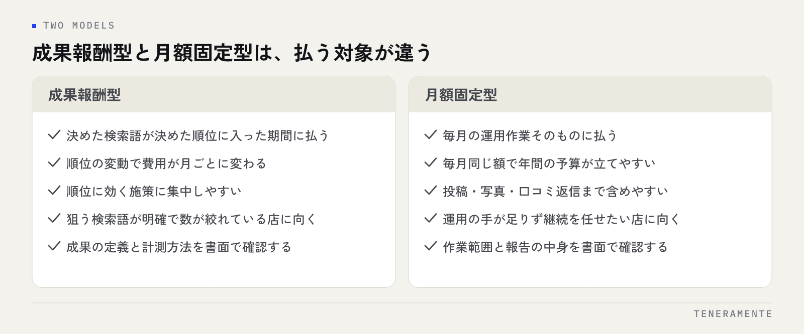

MEO対策を外部に頼もうとすると、まず料金の形が2種類あることに気づきます。順位が上がったときだけ払う成果報酬型と、毎月同じ額を払う月額固定型です。どちらが得かを先に考えたくなりますが、MEO対策の成果報酬型と月額固定型の違いは金額の多寡ではなく、「何に対して払うのか」と「誰が手を動かすのか」の違いです。この記事では、契約前に読んでおく条件と、自店に向く型の見極め方を整理します。
📌 この記事の結論
成果報酬型は「決めた検索語で決めた順位に入った日」に対して払う形、月額固定型は「毎月の作業」に対して払う形です。比べるべきは月々の金額ではなく、成果の定義・計測の方法・作業範囲・解約の条件という4つの契約条件です。この4つが書面で確認できない契約は、型を問わず避けてください。
01MEO対策の契約形態は、成果報酬型と月額固定型に分かれる
MEO対策（Map Engine Optimization、Googleマップや地図検索での上位表示を狙う施策）の契約は、料金の決まり方で大きく2つに分かれます。

成果報酬型は、あらかじめ決めた検索語で、あらかじめ決めた順位に入った期間だけ料金が発生する形です。順位が入らなければ費用はかからない、という点が分かりやすい魅力になっています。
月額固定型は、順位の結果にかかわらず毎月決まった額を払う形です。投稿の作成、写真の追加、口コミへの返信、インサイトの確認といった運用作業に対して払う、と考えると実態に近くなります。
この2つの間に、基本料金を月額で払い、順位に入った分だけ追加で払う併用型もあります。名前はさまざまですが、料金の仕組みはこの3通りに整理できます。
どの型でも、Googleビジネスプロフィール（GBP）の情報を整え、投稿と写真を続け、口コミに返す——やることそのものは大きく変わりません。変わるのは、その作業を誰がどこまで行うかと、支払いが何に連動するかです。
02成果報酬型と月額固定型の違いを表で整理する
同じ「MEO対策」という言葉でも、契約の中身はかなり違います。自店がどちらを読むべきかを判断する材料として並べます。
| 比べる点 | 成果報酬型 | 月額固定型 |
|---|---|---|
| 払う対象 | 決めた検索語が決めた順位に入った期間 | 毎月の運用作業そのもの |
| 費用の見通し | 順位の変動で月ごとに変わる | 毎月同じで予算が立てやすい |
| 作業範囲 | 順位に効く施策に集中しやすい | 投稿・写真・口コミ返信まで含めやすい |
| 向いている状況 | 狙う検索語が明確で数が絞れている | 運用の手が足りず、継続を任せたい |
| 注意したい点 | 成果の定義と計測方法で解釈が分かれる | 作業の内容が報告で見えないと判断できない |
| 止めたいとき | 順位が付いている期間の扱いを確認 | 最低契約期間と解約予告の時期を確認 |
表を眺めると、見るべき場所がはっきりします。成果報酬型では「成果の定義」、月額固定型では「作業範囲と報告」が契約の中心です。費用の相場感そのものはMEO対策の費用相場と内訳に整理しています。
03成果報酬型で必ず確認する「成果の定義」
成果報酬型でいちばん揉めやすいのが、成果と呼ぶ状態の定義です。契約前に、次の4つを言葉で確認してください。
1つ目は、対象の検索語です。 何語を対象にするのか、その語は自店に来るお客様が実際に使う言葉か。「地名＋業種」のように検索数のある語なのか、自店名に近い語なのかで、達成の難しさはまったく違います。対象の語は一覧で書面に残してください。
2つ目は、順位の範囲です。 地図検索で何位以内を成果とするのか。地図の結果は3件だけ表示される枠（ローカルパック）と、「さらに表示」を押した一覧で見える順位が別なので、どちらの順位を指すのかまで確認します。
3つ目は、どこから検索したときの順位かです。 地図検索の結果は検索した場所によって変わります。店舗の目の前で検索したときか、最寄り駅からか、市の中心からか。基準点が決まっていないと、同じ日に見ても結果が違います。
4つ目は、何日入っていたら1回分として数えるかです。 1日でも入れば計上するのか、月の中で何日以上なのか。日数の数え方は請求額に直結します。
注意したい形
対象の検索語を業者側だけで決める契約は避けてください。検索する人が少ない語を対象にすれば順位は付きやすく、成果の数は増えますが、来店は増えません。対象の語は自店で確認し、書面に残してください。
04月額固定型で確認する作業範囲と報告の中身
月額固定型は、払う額が決まっているぶん、何をしてもらえるのかが見えにくくなります。確認する点は作業範囲と報告の2つです。
作業範囲では、次の項目それぞれについて「業者が行う／自店が行う」のどちらなのかを決めます。GBPの基本情報の整備、投稿の作成と公開、写真の撮影と追加、口コミへの返信文の作成、商品・サービス欄の登録、営業時間の変更対応、問い合わせへの応答。とくに写真の撮影と口コミの返信は、現場でしか作れない内容なので、実際にどちらが作るのかで手間が大きく変わります。
報告では、何がどの頻度で届くかを確認します。順位の推移だけが並ぶ報告書だと、順位が動かなかった月に何をしたのかが分かりません。行った作業の一覧と、GBPのインサイト（表示回数・ルート検索・電話など）が併記されている形が望ましいです。報告書の実物を契約前に見せてもらうと、判断がはっきりします。
もう一点、変更依頼の窓口と反映までの時間も聞いておいてください。臨時休業や営業時間の変更は、当日に反映したい情報です。特別営業時間の設定方法のように自店で変えられる操作もあるので、どこまで自分で触ってよいかを決めておくと止まりません。
05契約前に確認する条件チェックリスト
型を問わず、契約前に書面で確認する項目です。そのまま使えるように並べます。
- 対象にする検索語の一覧が書面にあるか
- 成果と呼ぶ順位の範囲と、どの枠の順位かが明記されているか
- 順位を測る基準点（検索する場所）が決まっているか
- 計測の記録を自店でも見られるか、報告書で残るか
- 業者が行う作業と、自店が行う作業の線引きがあるか
- 報告の頻度と、報告書に載る項目が決まっているか
- GBPの管理権限を自店のアカウントで保持できるか
- 最低契約期間と、解約予告が必要な時期が書かれているか
- 解約後もGBPの管理権限と投稿内容が自店に残るか
- 口コミの投稿を代行・依頼する作業が含まれていないか
最後の項目は特に大切です。口コミの依頼や代行はGoogleのポリシーに反する行為で、ポリシー違反が見つかるとプロフィール自体が影響を受けます。契約書に書かれていなくても、提案の中でそうした話が出たら、その場で理由を確認してください。
GBPの管理権限については、自店のGoogleアカウントをオーナーにしたまま、業者を管理者として追加する形が安全です。業者のアカウントがオーナーになっていると、契約が終わったときに引き継ぎで手間がかかります。
06自店にどちらが向くかの見極め方
どちらの型が向くかは、業者の良し悪しではなく自店の状況で決まります。判断の材料を3つ挙げます。
狙う検索語が絞れているか。 「地名＋業種」のように対象がはっきりしていて、数も少ないなら、成果報酬型は分かりやすい形になります。逆に「何で検索されたいか」がまだ決まっていない段階だと、成果の定義が作れません。
自店で運用の手が動くか。 写真を撮る、投稿を書く、口コミに返す——この作業を続けられる人が店内にいるなら、順位に効く部分だけ外に出す形も取れます。手が足りないなら、運用ごと任せられる月額固定型のほうが現実的です。
費用の見通しをどこまで固めたいか。 月ごとに変動してよいなら成果報酬型、年間の予算を先に決めたいなら月額固定型です。併用型は両方の性質を持つので、基本料金の中に何が含まれるかを必ず確認します。
なお、どの型でも結果が見えるまでには時間がかかります。契約した翌月に順位が動くことを前提に計画を立てないでください。期間の感覚はMEO対策の効果が出るまでの期間にまとめています。
07よくある失敗とその避け方
成果の定義を口頭で済ませる。 「上位表示できたら」という表現だけで契約し、請求の段階で解釈が分かれる形です。対象の語、順位の範囲、基準点、日数の数え方を書面に残してから始めてください。
順位だけを見て、来店を見ていない。 順位が上がっても、ルート検索や電話が増えていなければ、来店につながっていません。GBPのインサイトを毎月記録し、順位と並べて見てください。見る項目はMEO対策の順位計測と指標に整理しています。
管理権限を業者のアカウントに渡してしまう。 契約を終えるときに、投稿も写真も引き継げない状態になります。オーナーは自店のまま、業者は管理者として追加してください。
解約の条件を読まずに契約する。 最低契約期間や解約予告の時期は、始めるときには気になりませんが、止めたいときに効いてきます。何か月前に伝える必要があるのかを先に確認します。
自店でできることを全部渡してしまう。 営業時間の変更や臨時休業の反映まで業者経由にすると、当日の変更が間に合いません。自店で触る範囲を決めて、操作できる人を2人以上作ってください。
08自分で進める場合と、専門家に任せる場合の分かれ目
分かれ目は、GBPの運用を毎週続けられる人が店内にいるかどうかです。
自分で進めやすいのは、店舗が1つで、写真を撮れる人がいて、口コミに自分の言葉で返せる場合です。GBPの操作そのものは難しくありません。基本情報を整え、週に1回投稿し、口コミに返す——この3つを続けるだけで変わる部分があります。自店の言葉で書いた返信や、実際の店内の写真は、外部では作れない強みになります。
任せたほうが早いのは、店舗が複数ある場合、繁忙期に運用の手が止まる場合、そして何で検索されたいかの整理から必要な場合です。複数店舗では、どの店の情報をどう書き分けるかという設計が必要になり、1店舗の延長では考えられません。また、競合が多い地域では、何を優先して整えるかの判断に経験が効きます。
進め方としては、まず自店で基本情報と写真を整え、続けられるかを3か月見る。続かない部分だけを外に出す——この順番なら、任せる範囲を自分の言葉で説明できる状態で契約に進めます。
09よくある質問
成果報酬型のほうが安全ではないのですか？
順位は毎日変わると聞きました。成果はどう数えるのでしょうか。
最低契約期間は何か月くらいが一般的ですか？
途中で月額固定型から成果報酬型に変えられますか？
複数の店舗がある場合、契約はまとめたほうがよいですか？
10まとめ：型を比べる前に、4つの契約条件を読む
MEO対策の成果報酬型と月額固定型は、どちらが優れているという関係ではありません。成果報酬型は「決めた検索語で決めた順位に入ったこと」に払う形、月額固定型は「毎月の運用作業」に払う形です。自店の狙う検索語が絞れていて、運用の手も動くなら成果報酬型、何から整えるかの段階で手も足りないなら月額固定型が現実的です。
どちらを選ぶ場合も、読む場所は同じです。成果の定義、計測の方法、作業範囲、解約の条件——この4つが書面で確認できるかどうか。そして、GBPの管理権限を自店に残せるかどうか。この5点を押さえておけば、契約の形がどう呼ばれていても判断できます。
TENERAMENTEなら、成果の定義と対象の検索語を最初にご一緒に決め、報告には順位だけでなくGBPのインサイト（表示回数・ルート検索・電話）まで載せる形で運用します。GBPのオーナー権限はお店に残したまま管理者として入りますので、契約を終えるときも投稿や写真がそのまま残ります。自店で続けたい作業と任せたい作業を分けてお引き受けできるため、繁忙期に運用が止まる心配をせずに続けられます。初回相談（60分）は無料です。MEO対策の進め方をご覧いただいたうえで、お問い合わせからお気軽にご相談ください。